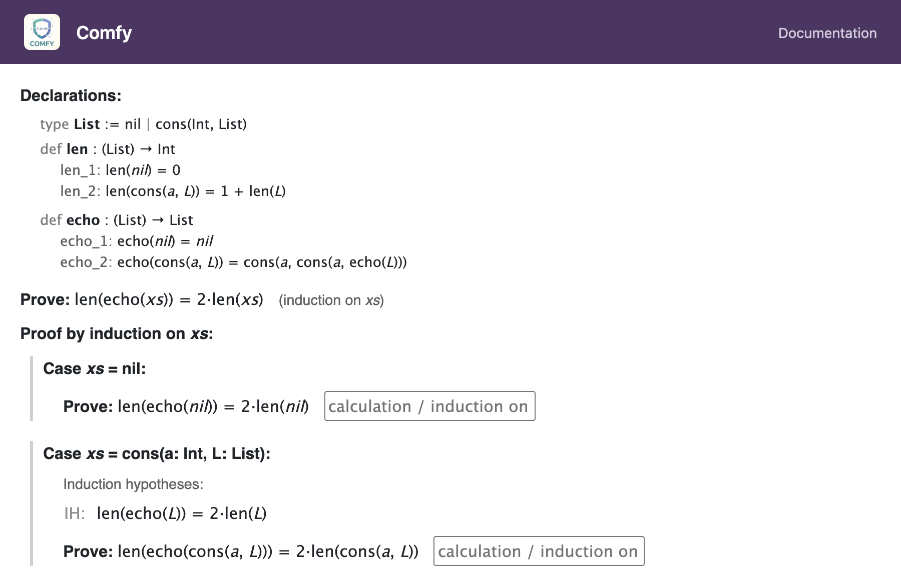
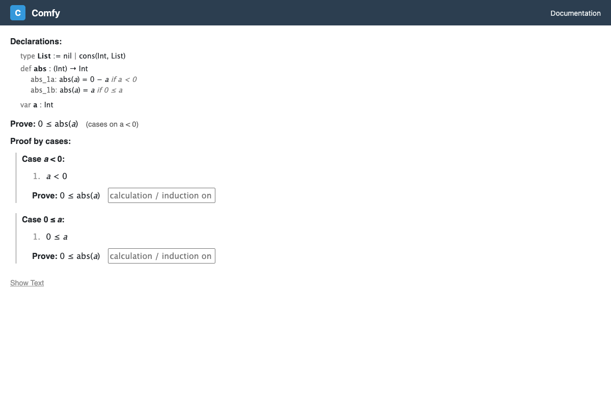

Proof Methods
After clicking Start on the setup screen, you enter the proof view. The goal is displayed with a text input below it where you choose a proof method. The available methods are:
calculationinduction on <variable>simple cases on <inequality>verumexfalsocontradiction <formula>absurdumleftrightcases <P> or <Q>
Type the method name and press Enter to confirm. The input supports Tab-completion — press Tab to autocomplete the method name, including available induction variables.

Auto-Discharge
Some proof methods generate sub-goals that you must prove independently. Before presenting these sub-goals, the system checks whether any of them are already known facts in the current environment. A sub-goal that matches a known fact is automatically discharged — you do not need to write a proof for it.
For example, if you use simple cases on x < 0 and the goal
is 0 <= x, the “else” case gives you
0 <= x as a known fact. Since that matches the goal, the
else case is automatically discharged and only the “then” case
requires a proof.
Matching uses equivalence, not syntactic identity.
For instance, the fact a <= b discharges a goal of
not b < a (since they are logically equivalent).
Calculation
Type calculation and press Enter. This is the most common
method and is used when you can directly transform the left side and right
side of the goal until they meet in the middle.
See Calculation Proofs for full details on how calculation chains work.
calculation for straightforward algebraic proofs, for
base cases in induction, and wherever you don't need structural induction or
case analysis.
Induction
Type induction on varName and press Enter. This
starts a proof by structural induction on the named
variable.
Requirements
- The variable must be declared with
varin the declarations. - The variable's type must be an inductively defined type (not
Int). - The variable must appear in the goal formula.
Optional: Naming Induction Arguments
You can optionally provide names for the constructor arguments:
induction on xs (a, L)
This names the arguments used in the inductive case (e.g., for
cons(a, L)). If omitted, default names are chosen
automatically.
What Happens
The proof splits into one case per constructor of the
induction variable's type. For a List with constructors
nil and cons, you get:

Base Case
For constructors with no recursive arguments (like nil), the
goal is the original formula with the induction variable replaced by the
constructor. No induction hypotheses are available.
Inductive Case
For constructors with recursive arguments (like cons(a, L)),
the goal has the variable replaced by the constructor applied to fresh
variables. You also get induction hypotheses (IH) —
the original goal formula applied to each recursive sub-part — as
named theorems.
For example, proving P(xs) by induction on xs : List:
| Case | Goal | Induction Hypotheses |
|---|---|---|
nil |
P(nil) |
(none) |
cons(a, L) |
P(cons(a, L)) |
IH : P(L) — available via apply IH |
The IH is displayed as a named theorem (given IH : ...) rather
than a numbered fact. Use apply IH (or apply IH => expr
with an explicit result) to apply it in a calculation step. If the theorem
being proved has extra parameters beyond the induction variable, the IH will
also have those parameters: given IH (T : List) : ....
Each case requires its own sub-proof. You choose a method for each case
(usually calculation) and prove it independently.
Tree Example
For a Tree with leaf and node(L, R):
| Case | Goal | Induction Hypotheses |
|---|---|---|
leaf |
P(leaf) |
(none) |
node(L, R) |
P(node(L, R)) |
IH_L : P(L) and IH_R : P(R) — two named theorems |
Simple Cases
Type simple cases on inequality and press Enter. This starts
a proof by cases that splits on whether an inequality
holds.
Requirements
- The condition must be an inequality using
<or<=. - You cannot use
=as a cases condition.
Example
simple cases on a < 0This creates two sub-proofs:
| Case | Additional Known Fact |
|---|---|
Case a < 0 |
a < 0 |
Case 0 <= a |
0 <= a (the negation) |

The negation of a < b is b <= a, and
the negation of a <= b is b < a.
Each case gets the condition (or its negation) as an additional numbered fact, which can be cited in proof rules. Each case requires its own sub-proof with its own proof method.
Exfalso
Type exfalso and press Enter. This method can prove
any goal by reducing it to proving false.
It generates a single sub-goal of false. If false
is already a known fact (e.g., from a premise), the sub-goal is
automatically discharged and the proof is complete.
exfalso when you have contradictory assumptions that imply
false. Combine with contradiction to derive
false from a fact and its negation.
Contradiction
Type contradiction formula and press Enter. This
proves false by generating two sub-goals: the formula and its
negation.
Example
contradiction x < x + 1This generates two sub-goals:
x < x + 1not x < x + 1
If both are already known facts, they are automatically discharged and the proof is complete. This is the typical usage: you have contradictory facts in the environment and cite the relevant formula.
exfalso and contradiction to prove any
goal from contradictory assumptions: first use exfalso to
reduce the goal to false, then use contradiction
to derive false.
Absurdum
Type absurdum and press Enter. This proves a goal of
not P by assuming P and deriving
false.
It generates a single sub-goal of false in an environment
where P is added as a known fact. If false is
already known (e.g., from a contradictory premise), the sub-goal is
automatically discharged.
absurdum when your goal is a negation. Inside the
sub-proof, you can use contradiction or
calculation to derive false from the assumed
fact and the other known facts.
Verum
Type verum and press Enter. This immediately proves a goal
of true with no sub-goals.
This method is only useful when the goal is literally true.
It produces zero sub-goals, so the proof is complete as soon as you
select it.
Left
Type left and press Enter. This proves a goal of
P or Q by proving only the left disjunct P.
It generates a single sub-goal: the first disjunct of the goal. If that disjunct is already a known fact, it is automatically discharged.
Right
Type right and press Enter. This proves a goal of
P or Q by proving only the right disjunct Q.
It generates a single sub-goal: the last disjunct of the goal. If that disjunct is already a known fact, it is automatically discharged.
Cases (Disjunction)
Type cases P or Q and press Enter. This
proves the current goal by case analysis on a known disjunction.
Example
cases x < 0 or 0 <= xThis generates three sub-goals:
x < 0 or 0 <= x— the disjunction itself (automatically discharged if already known)- The current goal, with
x < 0added as a known fact - The current goal, with
0 <= xadded as a known fact
Typically, the disjunction is already a known fact (e.g., from a premise), so it is automatically discharged and you only need to prove the goal under each branch.
cases when you have a disjunction in your assumptions
and need to reason about each possibility separately.
Nesting Proof Methods
Sub-proofs can use any proof method. This means you can nest:
- Induction with calculation cases
- Induction with simple-cases analysis inside an inductive case
- Simple cases with calculation in each branch
A common pattern is: induction at the top level, with simple cases on inside the inductive step (to handle conditional function definitions), and calculation at the leaves.